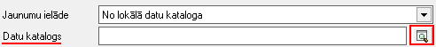
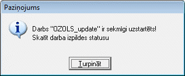
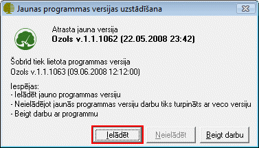

Programmas jauninājumi¶
Izvēloties darba režīmu Programmas jauninājumi, tiks izsaukta programmas atjaunošanas ekrāna forma:
{kind=link}
Programmas periodiska atjaunošana ir nepieciešama, lai varētu strādāt ar iespējami jaunāko programmas versiju, kas nodrošina jaunākās izmaiņas likumdošanā un programmas kvalitāti.
Jaunas Programmatūras uzstādīšana ir sadalīta divās daļās: 1.jaunākās klienta aplikācijas uzstādīšana, 2.jaunākās SQL datu bāzes struktūras uzstādīšana.
Ja viens no procesiem ir noritējis kļūdaini vai nepilnīgi, tad netiek garantēts klienta programmas korekta darbība. Klienta programmas un SQL datu bāzes jaunākās versijas uzstādīšana ir iespējama izmantojot klienta programmas interfeisu.
Lai veiktu jaunākās programmatūras uzstādīšanu:¶
1. Izvēlnē Jaunumu ielāde ir jāizvēlas veids kādā tiks veikts jaunākās programmatūras uzstādīšana. Ir iespējami trīs varianti :

- No Interneta caur klienta datoru: Tas nozīmē, ka programmatūras
uzstādīšanas sistēmas faili tiks ielādēti datorā no Interneta,
atkarībā no izmantotās klienta aplikācijas. Ja tiks konstatēts , ka
faili ir ielādēti veiksmīgi (nebūs paziņojums par pretējo), ielādētie
faili tiks ielādēti SQL servera datu bāzē. Nākošajā solī tiks
uzstartēts SQL servera Darbs , kas izpildīs sistēmas failos
ierakstītās komandu secības.
+ No Interneta caur SQL serveri Tas nozīmē, ka programmatūras
uzstādīšanas sistēmas faili tiks ielādēti SQL serverī no Interneta,
atkarībā no izmantotās klienta aplikācijas. Ja tiks konstatēts , ka
faili ir ielādēti veiksmīgi (nebūs paziņojums par pretējo), ielādētie
faili tiks ielādēti SQL servera datu bāzē. Nākošajā solī tiks
uzstartēts SQL servera Darbs , kas izpildīs sistēmas failos
ierakstītās komandu secības.  SQL serverim ir
jābūt pieejamam Internetam.
+ No lokālā datu kataloga Tas nozīmē, ka programmatūras uzstādīšanas
SQL serverim ir
jābūt pieejamam Internetam.
+ No lokālā datu kataloga Tas nozīmē, ka programmatūras uzstādīšanas
sistēmas faili ir iepriekš sagatavoti un ierakstīti kādā no datora failu sistēmas katalogiem. Obligāti ir jānorāda sagatavoto failu katalogs:  Ja tiks konstatēts , ka programmas atjaunošanas faili ir atbilstoši klienta programmatūras jauninājumu failiem, tiks veikta failu ielāde SQL servera datu bāzes tabulā. Pretējā gadījumā parādīsies paziņojums par failu neatbilstību dotajai sistēmai. Ja failu ielāde ir bijusi veiksmīga, tiks uzstartēts SQL servera darbs. 2. Pēc izvēlētā veida norādīšanas, lai veiktu jaunākas versijas uzstādīšanu, nepieciešams nospiest pogu: Ir jāaizpilda SQL reģistrācijas ekrāna formas ievades lauki un jānospiež poga . Pēc visu iepriekšminēto darbību veikšanasProgrammas atjaunošanas logā vēlreiz jānospiež poga .Ja reģistrācija ir noritējusi sekmīgi, nav bijuši paziņojumi par pretējo, tad tiks parādīts paziņojums par sekmīgu darba uzstartēšanu:  3. Jaunākas versijas uzstādīšana ilgst aptuveni 10-25 minūtes (atkarīgs no servera datora ātrdarbības). SQL servera darba izpildes vēsturei var sekot nospiežot pogu un tiks atvērts Darba izpildes logs . Ja programmas uzstādīšanas procedūra ir noritējusi veiksmīgi , tad SQL servera darba vēstures kolonnā „Rezultāts” ir ieraksts „Succeeded”. Lai ielādētu jaunāko programmas versiju, nepieciešams aizvērt programmu un nākamajā pieslēgšanās reizē, izvēlēties opciju: Ielādēt: 
{kind=link}
{kind=link}
{kind=link}
{kind=link}
{kind=link}
{kind=link}